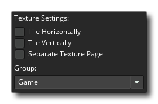
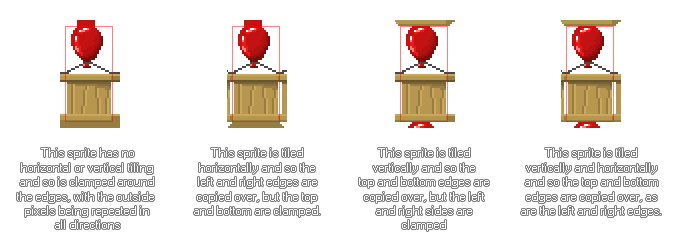

Cuando creas un juego con GameMaker Studio 2, seguro que habrás creado gráficos (sprites, tilesets y fuentes) para ir de la mano. Estos gráficos se almacenan en las páginas de textura que GameMaker Studio 2 construye para usted a partir de todos los recursos de imágenes que contiene su juego. A continuación se muestra un ejemplo de una página de textura completa: 
Como puede ver, los gráficos del juego están todos mezclados de tal manera que todos se ajustan a una potencia de 2 páginas de tamaño, por ejemplo, 512x512, 1024x512, etc.... hasta un tamaño máximo de 4096x4096 píxeles de página. Tenga en cuenta que el tamaño máximo de una página de texturas dependerá de la plataforma de exportación elegida, ya que algunos objetivos no permitirán páginas de más de 2048x2048px. También vale la pena señalar que incluso si tiene un recurso que es más grande que 4096px de tamaño, o el tamaño máximo para la plataforma elegida, se reducirá a la mitad (y la otra mitad si es necesario) hasta que se ajuste al tamaño máximo de página, no se dividirá en secciones sobre varias páginas de textura.
También vale la pena señalar que si tus sprites tienen mucho espacio vacío (es decir, píxeles transparentes), se recortarán por defecto para eliminar cualquiera de estos píxeles "invisibles" y empacar la mayor cantidad posible de imágenes en una sola textura. página. Si esto no es lo que deseas que ocurra, entonces debes deshabilitarlo desde la ventana de Grupos de texturas.
Configuración de textura
El editor de recursos de sprites tiene una sección titulada Configuraciones de texturas, que se muestra a continuación: 
Aquí puede definir cómo se almacenará la imagen en la página de texturas, así como si se trata de una imagen específica para su uso con un objeto 3D o si debe almacenarse por separado y qué página de texturas (si corresponde) debe asignarse a. Las primeras dos opciones, Tile Horizontal y Tile Vertical se relacionan con cómo se crearán los bordes de la imagen cuando se colocan en la página de texturas. Una imagen que se va a embaldosar tendrá los bordes (horizontal o vertical) añadidos por los bordes del lado opuesto, mientras que si no se selecciona embaldosado, el sprite se sujetará y los bordes se volverán a repetir (tenga en cuenta que los tilesets también tienen una configuración para el ancho del borde de salida, que se encuentra en Propiedades del conjunto de mosaicos, que hace lo mismo, solo para cada mosaico en el conjunto). La siguiente imagen ilustra esto: 
Debajo de esas configuraciones está la configuración de Página de Textura Separada. Esta opción obligará a GameMaker Studio 2 a colocar esta imagen en su propia página de textura única y no hay opciones asociadas con esto, ya que el mosaico o la sujeción se controlan directamente a través del código. Esto se usa más comúnmente para texturizar modelos 3D (en cuyo caso la textura debe ser una potencia de 2, por ejemplo: 128x128 o 512x512), pero puede usarla para forzar cualquier imagen que se dibuje en su propia página única.
Ahora, cuando su juego es grande y cuenta con muchos recursos artísticos, es posible que la forma en que GameMaker Studio 2 crea automáticamente estas páginas no sea el óptimo para obtener el máximo rendimiento del dispositivo de destino, ya que si una habitación su juego necesita recursos de 4 páginas de textura diferentes, el dispositivo tendrá que cambiar estas páginas a la memoria (y fuera de ella) constantemente, lo que puede causar una pérdida de rendimiento. Para ello, tiene la opción de decirle a GameMaker Studio 2 qué imágenes se van a colocar en una página de texturas específica, con el objetivo final de minimizar la cantidad de intercambios que se realizan en un juego al mismo tiempo (se pueden agregar páginas con texturas). de la ventana Grupos de texturas ). También vale la pena señalar que en las pestañas de la plataforma individual que se pueden encontrar en las Opciones del juego hay un botón que le permite ver las páginas de textura que ha definido, tal como se crearían para cada objetivo.
Si tiene una textura en su juego mayor que el tamaño de la página de textura, GameMaker Studio 2 reducirá automáticamente esta imagen para que quepa en la página de textura. Esto significa que cuando pruebes tu juego en Windows, Ubuntu (Linux) o MacOS, el juego se verá bien ya que estás usando páginas de textura más grandes, pero en iOS (o cualquiera de los otros objetivos que requieren un tamaño de página de textura más pequeño para un rendimiento óptimo ) la textura puede verse borrosa o tener artefactos. Es esencial que te asegures de que todas tus imágenes puedan caber en el tamaño de página de textura más pequeño que usará tu juego, y si no, debes dividirlas en imágenes más pequeñas y luego juntarlas en tu juego para obtener el ilusión de una imagen grande, completa.